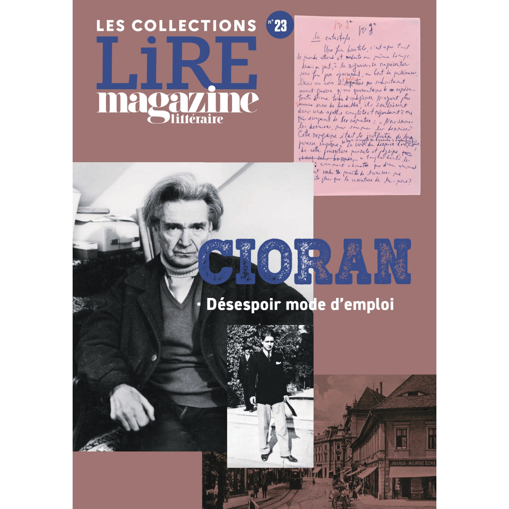

31:03 · 4 OPERE
Emil Cioran, Al culmine della disperazione
Il filo del discorso
Al culmine della disperazione viene presentato come un accesso privilegiato al pensiero di Cioran. Dr Divago sottolinea la forza della prima opera e contesta l’abitudine di misurare il valore di un pensatore attraverso l’età in cui scrive. I richiami a Einstein, Eulero, Kant e Archimede aprono una riflessione sui luoghi comuni della creatività. La lettura del libro si concentra poi sui frammenti, sull’insonnia e sui temi del dolore, del corpo, della solitudine e della morte. Nietzsche e Schopenhauer offrono un contesto interpretativo, ma il relatore ritiene insufficienti le sole etichette di pessimismo e nichilismo. La pubblicazione negli anni Trenta introduce una lunga digressione sul potere delle masse e sulla perdita del rapporto fra ragione e significato. Il percorso che Dr Divago traccia da Cartesio alla propaganda e ai cosiddetti fatti alternativi è una sua genealogia filosofica, distinta da una ricostruzione storica dimostrata. Tornando a Cioran, la scrittura appare come esposizione senza riparo delle proprie domande e come filo conduttore di un’intera opera. Il dossier Désespoir, mode d’emploi accompagna questa prospettiva. La storia del violino distrutto per cercarvi la musica permette infine di distinguere un’analisi materiale dall’esperienza del significato; Bonhoeffer e la teologia negativa entrano in questo confronto. La conclusione richiama il rapporto con l’assoluto, la discrezione biografica e la critica dell’ideologia del lavoro, tornando all’invito a leggere il primo libro.
I libri nel discorso

Al culmine della disperazione
Copertina: Adelphi · Biblioteca Adelphi 364, 1998 · traduzione Del Fabbro e Fantechi
Immagine autentica dell’opera, controllata visivamente; l’edizione di riferimento non è attribuita al filmato.
Cioran e Al culmine della disperazione sono il tema esplicito di tutto il video.
Passaggio 0:04 ↗ · Fonti e libro ↗
La gaia scienza
Identificazione probabile
Copertina: Adelphi · La gaia scienza e Idilli di Messina
Copertina autentica controllata visivamente. Edizione di riferimento, non identificata come quella usata nel video.
La formula della morte di Dio rinvia probabilmente alla Gaia scienza, in particolare §125; il titolo non è annunciato e il motivo ricorre anche altrove.
Passaggio 9:53 ↗ · Fonti e libro ↗
Discorso sul metodo
Identificazione probabile
Copertina: Laterza · Economica 127 · opera in collana dal 1998, ristampa 2025 · traduzione di Maria Garin
Immagine autentica dell’opera, controllata visivamente; l’edizione di riferimento non è attribuita al filmato.
Cogito ergo sum è esplicito; il Discorso sul metodo, parte IV, è una localizzazione probabile, non l’unica opera cartesiana pertinente.
Passaggio 11:42 ↗ · Fonti e libro ↗
Cioran. Désespoir, mode d’emploi
Copertina della riedizione del dossier: Les Collections n.23: Lire Magazine Littéraire · Les Collections n.23 · riedizione del dossier del n.508, maggio 2011
Copertina ufficiale della riedizione autonoma del dossier su Cioran, Les Collections n.23. Il dossier originale appartiene a Le Magazine littéraire n.508, maggio 2011; questa non è la copertina di quel fascicolo e non è una monografia di Cioran.
Magazine littéraire, dossier dedicato a Cioran e titolo Désespoir, mode d’emploi sono espliciti.
Passaggio 19:52 ↗ · Fonti e libro ↗